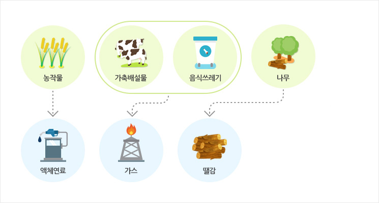

바이오 에너지 소개
바이오 에너지는 살아있는 생물체로부터 생겨나는 에너지를 이용하는 것으로, 나무를 땔감으로 사용하기도 하고 식물에서 기름을 추출해 액체 연료로 만드는 등 동·식물의 에너지를 이용하여 자연환경을 깨끗하게 유지할 수 있습니다.
바이오 에너지 개요
쓰레기매립지에서 발생하여 환경오염의 원인이 되기도 하는 매립지가스(LFG : Landfill Gas)를 원료로 발전 설비를 가동하고 전력을 생산하는 과정을 통하여 매립지 주변의 환경오염(메탄가스 대기방출)을 저감하고, 폐기물을 자원으로 재활용할 수 있습니다.
바이오 에너지 원리 및 구조

- 매립가스 포집 : 쓰레기매립지에서 발생하는 매립지가스(Landfill Gas) 중 가연성 기체인 메탄(CH4)을 포집하여 발전의 열원으로 사용
- 보일러 연소 : 보일러에서 메탄(CH4)을 연소하여 과열 증기 생산
- 과열증기로 터빈과 발전기 가동 및 전력생산 : 보일러에서 공급되는 과열 증기로 터빈 발전기를 가동시켜 전력을 생산하고 송전 계통을 통해 이를 한전으로 공급
- 잔열의 재사용 : 터빈과 발전기 가동 시 증기의 일부가 급수의 가열에 재사용되고 나머지 폐열은 복수기를 통해 순환수 계통으로 방출됨